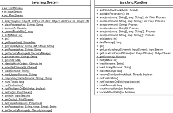
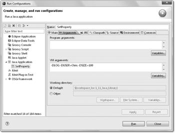

11.6 Die Utility-Klasse System und Properties
In der Klasse java.lang.System finden sich Methoden zum Erfragen und Ändern von Systemvariablen, zum Umlenken der Standard-Datenströme, zum Ermitteln der aktuellen Zeit, zum Beenden der Applikation und noch für das ein oder andere. Alle Methoden sind ausschließlich statisch, und ein Exemplar von System lässt sich nicht anlegen. In der Klasse java.lang.Runtime – die Schnittstelle RunTime aus dem CORBA-Paket hat hiermit nichts zu tun – finden sich zusätzlich Hilfsmethoden, wie etwa das Starten von externen Programmen oder Methoden zum Erfragen des Speicherbedarfs. Anders als System ist hier nur eine Methode statisch, nämlich die Singleton-Methode getRuntime(), die das Exemplar von Runtime liefert.
Abbildung 11.5: Eigenschaften der Klassen System und Runtime
| Bemerkung |
|
Insgesamt machen die Klassen System und Runtime keinen besonders aufgeräumten Eindruck; sie wirken irgendwie so, als sei hier alles zu finden, was an anderer Stelle nicht mehr hineingepasst hat. Auch wären Methoden einer Klasse genauso gut in der anderen Klasse aufgehoben. Dass die statische Methode System.arraycopy() zum Kopieren von Feldern nicht in java.util.Arrays stationiert ist, lässt sich nur historisch erklären. Und System.exit() leitet an Runtime.getRuntime().exit() weiter. Einige Methoden sind veraltet beziehungsweise anders verteilt: Das exec() von Runtime zum Starten von externen Prozessen übernimmt eine neue Klasse ProcessBuilder, und die Frage nach dem Speicherzustand oder der Anzahl der Prozessoren beantworten MBeans, wie etwa ManagementFactory.getOperatingSystemMXBean().getAvailableProcessors(). Aber API-Design ist wie Sex: Eine unüberlegte Aktion, und es lebt mit uns für immer. |
11.6.1 Systemeigenschaften der Java-Umgebung
Die Java-Umgebung verwaltet Systemeigenschaften wie Pfadtrenner oder die Version der virtuellen Maschine in einem java.util.Properties-Objekt. Die statische Methode System.getProperties() erfragt diese Systemeigenschaften und liefert das gefüllte Properties-Objekt zurück. Zum Erfragen einzelner Eigenschaften ist das Properties-Objekt aber nicht unbedingt nötig: System.getProperty() erfragt direkt eine Eigenschaft.
| Beispiel |
|
Gib den Namen des Betriebssystems aus: System.out.println( System.getProperty("os.name") );System.getProperties().list( System.out ); -- listing properties -- |
Eine Liste der wichtigen Standard-Systemeigenschaften:
| Schlüssel | Bedeutung |
| java.version | Version der Java-Laufzeitumgebung |
| java.class.path | Klassenpfad |
| java.library.path | Pfad für native Bibliotheken |
| java.io.tmpdir | Pfad für temporäre Dateien |
| os.name | Name des Betriebssystems |
| file.separator | Trenner der Pfadsegmente, etwa / (Unix) oder \ (Windows) |
| path.separator | Trenner bei Pfadangaben, etwa : (Unix) oder ; (Windows) |
| line.separator | Zeilenumbruchzeichen(-folge) |
| user.name | Name des angemeldeten Benutzers |
| user.home | Home-Verzeichnis des Benutzers |
| user.dir | Aktuelles Verzeichnis des Benutzers |
API-Dokumentation
Ein paar weitere Schlüssel zählt die API-Dokumentation bei System.getProperties() auf. Einige der Variablen sind auch anders zugänglich, etwa über die Klasse File.
final class java.lang.System |
- static String getProperty(String key)
Gibt die Belegung einer Systemeigenschaft zurück. Ist der Schlüssel null oder leer, gibt es eine NullPointerException beziehungsweise eine IllegalArgumentException. - static String getProperty(String key, String def)
Gibt die Belegung einer Systemeigenschaft zurück. Ist sie nicht vorhanden, liefert die Methode die Zeichenkette def, den Default-Wert. Für die Ausnahmen gilt das Gleiche wie bei getProperty(String). - static String setProperty(String key, String value)
Belegt eine Systemeigenschaft neu. Die Rückgabe ist die alte Belegung – oder null, falls es keine alte Belegung gab. - static String clearProperty(String key)
Löscht eine Systemeigenschaft aus der Liste. Die Rückgabe ist die alte Belegung – oder null, falls es keine alte Belegung gab. - static Properties getProperties()
Liefert ein mit den aktuellen Systembelegungen gefülltes Properties-Objekt.
11.6.2 line.separator
Um nach dem Ende einer Zeile an den Anfang der nächsten zu gelangen, wird ein Zeilenumbruch (engl. new line) eingefügt. Das Zeichen für den Zeilenumbruch muss kein einzelnes sein, es können auch mehrere Zeichen nötig sein. Zum Leidwesen der Programmierer unterscheidet sich die Anzahl der Zeichen für den Zeilenumbruch auf den bekannten Architekturen:
- Unix: Line Feed (Zeilenvorschub)
- Windows: beide Zeichen (Carriage Return und Line Feed)
- Macintosh: Carriage Return (Wagenrücklauf)
Der Steuercode für Carriage Return (kurz CR) ist 13 (0x0D), der für Line Feed (kurz LF) 10 (0x0A). Java vergibt obendrein eigene Escape-Sequenzen für diese Zeichen: \r für Carriage Return und \n für Line Feed (die Sequenz \f für einen Form Feed – Seitenvorschub – spielt bei den Zeilenumbrüchen keine Rolle).
Bei der Ausgabe mit einem println() oder der Nutzung des Formatspezifizierers %n in format() beziehungsweise printf() haben wir bei Zeilenumbrüchen keinerlei Probleme. So ist es oft gar nicht nötig, das Zeilenumbruchzeichen vom System über die Property line.separator zu erfragen.
11.6.3 Eigene Properties von der Konsole aus setzen *
Eigenschaften lassen sich auch beim Programmstart von der Konsole aus setzen. Dies ist praktisch für eine Konfiguration, die beispielsweise das Verhalten des Programms steuert. In der Kommandozeile werden mit -D der Name der Eigenschaft und nach einem Gleichheitszeichen (ohne Leerzeichen) ihr Wert angegeben. Das sieht dann etwa so aus:
$ java -DLOG –DUSER=Chris -DSIZE=100 com.tutego.insel.lang.SetProperty
Die Property LOG ist einfach nur »da«, aber ohne zugewiesenen Wert. Die nächsten beiden Properties, USER und SIZE, sind mit Werten verbunden, die erst einmal vom Typ String sind und vom Programm weiterverarbeitet werden müssen.
Die Informationen tauchen nicht bei der Argumentliste in der statischen main()-Methode auf, da sie vor dem Namen der Klasse stehen und bereits von der Java-Laufzeitumgebung verarbeitet werden.
Um die Eigenschaften auszulesen, nutzen wir das bekannte System.getProperty():
Listing 11.8: com/tutego/insel/lang/SetProperty.java
package com.tutego.insel.lang;
class SetProperty
{
static public void main( String[] args )
{
String logProperty = System.getProperty( "LOG" );
String usernameProperty = System.getProperty( "USER" );
String sizeProperty = System.getProperty( "SIZE" );
System.out.println( logProperty != null ); // true
System.out.println( usernameProperty ); // Chris
if ( sizeProperty != null )
System.out.println( Integer.parseInt( sizeProperty ) ); // 100
System.out.println( System.getProperty( "DEBUG", "false" ) ); // false
}
}
Wir bekommen über getProperty() einen String zurück, der den Wert anzeigt. Falls es überhaupt keine Eigenschaft dieses Namens gibt, erhalten wir stattdessen null. So wissen wir auch, ob dieser Wert überhaupt gesetzt wurde. Ein einfacher Test wie bei logProperty != null sagt also, ob logProperty vorhanden ist oder nicht. Statt -DLOG führt auch -DLOG= zum gleichen Ergebnis, denn der assoziierte Wert ist der Leerstring. Da alle Properties erst einmal vom Typ String sind, lässt sich usernameProperty einfach ausgeben, und wir bekommen entweder null oder den hinter = angegebenen String. Sind die Typen keine Strings, müssen sie weiterverarbeitet werden, also etwa mit Integer.parseInt(), Double.parseDouble() usw. Nützlich ist die Methode System.getProperty(), der zwei Argumente übergeben werden, denn das zweite steht für einen Default-Wert. So kann immer ein Standardwert angenommen werden.

Abbildung 11.6: Entwicklungsumgebungen erlauben es, die Kommandozeilenargumente in einem Fenster zu setzen. Unter Eclipse gehen wir dazu unter Run • Run Configurations, dann zu Arguments.
Boolean.getBoolean()
Im Fall von Properties, die mit Wahrheitswerten belegt werden, kann Folgendes geschrieben werden:
boolean b = Boolean.parseBoolean( System.getProperty(property) ); // (*)
Für die Wahrheitswerte gibt es eine andere Variante. Die statische Methode Boolean.getBoolean(name) sucht aus den System-Properties eine Eigenschaft mit dem angegebenen Namen heraus. Analog zur Zeile (*) ist also:
boolean b = Boolean.getBoolean( property );
Es ist schon erstaunlich, diese statische Methode in der Wrapper-Klasse Boolean anzutreffen, weil Property-Zugriffe nichts mit den Wrapper-Objekten zu tun haben und die Klasse hier eigentlich über ihre Zuständigkeit hinausgeht.
Gegenüber einer eigenen, direkten System-Anfrage hat getBoolean() auch den Nachteil, dass wir bei der Rückgabe false nicht unterscheiden können, ob es die Eigenschaft schlichtweg nicht gibt oder ob die Eigenschaft mit dem Wert false belegt ist. Auch falsch gesetzte Werte wie -DP=fa1se ergeben immer false.[179](Das liegt an der Implementierung: Boolean.valueOf("false") liefert genauso false wie Boolean.valueOf("fa1se"), Boolean.valueOf("") oder Boolean.valueOf(null).)
final class java.lang.Boolean |
- static boolean getBoolean(String name)
Liest eine Systemeigenschaft mit dem Namen name aus und liefert true, wenn der Wert der Property gleich dem String "true" ist. Die Rückgabe ist false, wenn entweder der Wert der Systemeigenschaft "false" ist oder er nicht existiert oder null ist.
11.6.4 Umgebungsvariablen des Betriebssystems *
Fast jedes Betriebssystem nutzt das Konzept der Umgebungsvariablen (engl. environment variables); bekannt ist etwa PATH für den Suchpfad für Applikationen unter Windows und unter Unix. Java macht es möglich, auf diese System-Umgebungsvariablen zuzugreifen. Dazu dienen zwei statische Methoden:
final class java.lang.System |
- static Map<String, String> getEnv()
Liest eine Menge von <String, String>-Paaren mit allen Systemeigenschaften. - static String getEnv(String name)
Liest eine Systemeigenschaft mit dem Namen name. Gibt es sie nicht, ist die Rückgabe null.
| Beispiel |
|
Was ist der Suchpfad? Den liefert System.getenv("path"); |
| Name der Variablen | Beschreibung | Beispiel |
| COMPUTERNAME | Name des Computers | MOE |
| HOMEDRIVE | Laufwerksbuchstabe des Benutzerverzeichnisses | C |
| HOMEPATH | Pfad des Benutzerverzeichnisses | \Dokumente und Einstellungen\ Christian Ullenboom |
| OS | Name des Betriebssystems | Windows_NT |
| PATH | Suchpfad | C:\WINDOWS\system32; C:\WINDOWS |
| PATHEXT | Dateiendungen, die für ausführbare Programme stehen | .COM;.EXE;.BAT;.CMD;.WSH |
| SYSTEMDRIVE | Laufwerksbuchstabe des Betriebssystems | C |
| TEMP und auch TMP | Temporäres Verzeichnis | C:\DOKUME~1\CHRIST~1\ LOKALE~1\Temp |
| USERDOMAIN | Domäne des Benutzers | MOE |
| USERNAME | Name des Nutzers | Christian Ullenboom |
| USERPROFILE | Profilverzeichnis | C:\Dokumente und Einstellungen\ Christian Ullenboom |
| WINDIR | Verzeichnis des Betriebssystems | C:\WINDOWS |
Einige der Variablen sind auch über die System-Properties (System.getProperties(), System.getProperty()) erreichbar.
| Beispiel |
|
Gib die Umgebungsvariablen des Systems aus. Um die Ausgabe etwas übersichtlicher zu gestalten, ist bei der Aufzählung jedes Komma durch ein Zeilenvorschubzeichen ersetzt worden: Map<String, String> map = System.getenv(); |
11.6.5 Einfache Zeitmessung und Profiling *
Neben den komfortablen Klassen zum Verwalten von Datumswerten gibt es mit zwei statischen Methoden einfache Möglichkeiten, Zeiten für Programmabschnitte zu messen:
final class java.lang.System |
- static long currentTimeMillis()
Gibt die seit dem 1.1.1970 vergangenen Millisekunden zurück. - static long nanoTime()
Liefert die Zeit vom genauesten System-Zeitgeber. Sie hat keinen Bezugspunkt zu irgendeinem Datum; seit dem 1.1.1970 sind so viele Nanosekunden vergangen, dass sie gar nicht in den long passen würden.
Die Differenz zweier Zeitwerte kann zur groben Abschätzung von Ausführungszeiten für Programme dienen:
Listing 11.9: com/tutego/insel/lang/Profiling.java
package com.tutego.insel.lang;
import static java.util.concurrent.TimeUnit.NANOSECONDS;
class Profiling
{
private static long[] measure()
{
final int MAX = 4000;
final String string = "Aber Angie, Angie, ist es nicht an der Zeit, Goodbye
zu sagen? " +
"Ohne Liebe in unseren Seelen und ohne Geld in unseren
Mänteln. " +
"Du kannst nicht sagen, dass wir zufrieden sind.";
final int number = 123;
final double nullnummer = 0.0;
// StringBuffer(size) und append() zur Konkatenation
long time1 = System.nanoTime();
final StringBuilder sb1 = new StringBuilder( MAX * (string.length() + 6) );
for ( int i = MAX; i-- > 0; )
sb1.append( string ).append( number ).append( nullnummer );
sb1.toString();
time1 = NANOSECONDS.toMillis( System.nanoTime() – time1 );
// StringBuffer und append() zur Konkatenation
long time2 = System.nanoTime();
final StringBuilder sb2 = new StringBuilder();
for ( int i = MAX; i-- > 0; )
sb2.append( string ).append( number ).append( nullnummer );
sb2.toString();
time2 = NANOSECONDS.toMillis( System.nanoTime() – time2 );
// + zur Konkatenation
long time3 = System.nanoTime();
String t = "";
for ( int i = MAX; i-- > 0; )
t += string + number + nullnummer;
time3 = NANOSECONDS.toMillis( System.nanoTime() – time3 );
return new long[] { time1, time2, time3 };
}
public static void main( String[] args )
{
measure(); System.gc(); measure(); System.gc();
long[] durations = measure();
System.out.printf( "sb(size), append(): %d ms%n", durations[0] );
// sb(size), append(): 2 ms
System.out.printf( "sb(), append() : %d ms%n", durations[1] );
// sb(), append() : 21 ms
System.out.printf( "t+= : %d ms%n", durations[2] );
// t+= : 10661 ms
}
}
Das Testprogramm hängt Zeichenfolgen mit
- einem StringBuilder, der nicht in der Endgröße initialisiert ist,
- einem StringBuilder, der eine vorinitialisierte Endgröße nutzt, und
- dem Plus-Operator von Strings zusammen.
Vor der Messung gibt es zwei Testläufe und ein System.gc(), was den Garbage-Collector (GC) anweist, Speicher freizugeben. (Das würde in gewöhnlichen Programmen nicht stehen, da der GC schon selbst ganz gut weiß, wann Speicher freizugeben ist. Nur kostet das Freigeben auch Ausführungszeit, und es würde die Messzeiten beeinflussen, was wir hier nicht wollen.)
Auf meinem Rechner (Intels Core 2 Quad Q6600 (Quadcore), 2,4 GHz, JDK 6) liefert das Programm die Ausgabe:
sb(size), append(): 1 ms
sb(), append() : 3 ms
t+= : 39705 ms
Das Ergebnis: Bei großen Anhänge-Operationen ist es ein wenig besser, einen passend in der Größe initialisierten StringBuilder zu benutzen. Über das + entstehen viele temporäre Objekte, was wirklich teuer kommt. Aber auch, wenn der StringBuilder nicht die passende Größe enthält, sind die Differenzen nahezu unbedeutend.
Wo im Programm überhaupt Taktzyklen verbraten werden, zeigt ein Profiler. An diesen Stellen kann dann mit der Optimierung begonnen werden. Eclipse sieht mit dem TPTP (http://www.eclipse.org/tptp/) eine solche Messumgebung vor, und auch http://code.google.com/a/eclipselabs.org/p/jvmmonitor/ ist ein kleines Plugin für Eclipse. NetBeans integriert einen Profiler, Informationen liefert http://profiler.netbeans.org/.
Ihr Kommentar
Wie hat Ihnen das <openbook> gefallen? Wir freuen uns immer über Ihre freundlichen und kritischen Rückmeldungen.
 Jetzt bestellen
Jetzt bestellen


{kind=link}